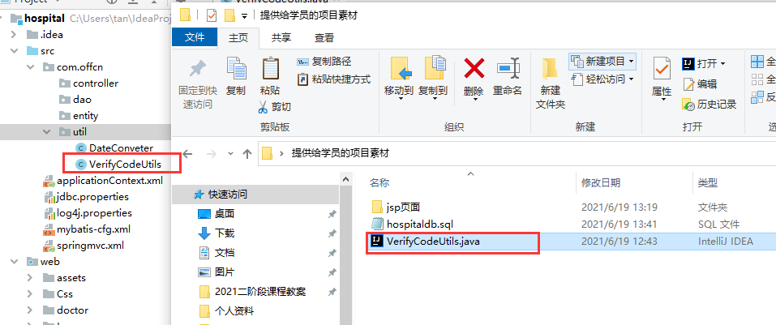

医疗管理系统
1.项目介绍
1 | 医院信息系统（Hospital Information System简称HIS）在发达国家已经得到了广泛的应用，并创造了良好的社会效益和经济效益。医疗信息系统是现代化医院运营的必要技术支撑和基础设施，实现医疗信息系统的目的就是为了以更现代化、科学化、规范化的手段来加强医院的管理，提高医院的工作效率，改进医疗质量，从而树立现代医院的新形象，这也是未来医院发展的必然方向。 |
2.技术栈
1 | 本系统基于ssm架构.搭建在tomcat（8.5）服务器上。开发ide工具使用idea。 jdk 1.8 |
3.搭建项目环境
1 | 搭建步骤： |
3.1创建web项目
3.2、搭建ssm框架
1 | 1.拷贝所需jar包 |
3.3、拷贝医疗系统页面素材到项目web目录中
拷贝验证码工具到com.offcn.util包下

3.4、把项目部署到tomcat服务器，测试运行
3.5、测试结果
1 | 项目启动成功后。浏览器自动打开login.jsp 能看到效果证明配置成功 |
3.6、ssm框架常见错误
1 | 打开页面看不到图片，css没有起作用： |
4.搭建数据库
1 | 导入准备好的sql脚本,运行脚本，生成数据库、表 |
1 | 修改jdbc.properties中。 数据库的名字 |
5.生成验证码
1 | 步骤 |
5.1 修改属性
5.2 在controller中生成验证码
1 | package com.offcn.controller; |
6.点击换验证码
1 | 步骤： |
7.登录
1 | 具体步骤： |
7.1、login.jsp发起登录请求
7.2、UserController 处理登录请求
1 | package com.offcn.controller; |
7.3、 UserDao处理登录请求
1 | package com.offcn.dao; |
7.4、 回显用户昵称
1 | 在top.jsp中使用el表达式获取 用户昵称 |

7.5、注销
1 | 具体步骤： |
修改top.jsp
UserController处理注销请求
1 |
|
8.注册(作业)
1 | 小组自主完成 |
9.医生模块-查询功能
1 | 通过left.jsp 点击门诊医生管理超链接，发起请求到后台Controller，处理请求，查询数据库。 |
9.1、javaBean 医生实体类 Doctor
1 | package com.offcn.entity; |
9.2、DoctorController
1 | package com.offcn.controller; |
9.3、DoctorDao ， DoctorDao.xml
1 | public interface DoctorDao { |
9.4、doctor/index.jsp
1 | <%@ page language="java" contentType="text/html; charset=UTF-8" |
9.5、小组内研究功能- 根据科室编号展示科室名
10.医生模块-新增医生功能
1 | 1.点击添加新医生，通过javascript 跳转到 doctor/add.jsp |
10.1、DoctorController
1 |
|
10.2、DoctorDao
1 | //添加医生信息 |
10.2 小组内研究功能- 表单校验
11.医生模块-编辑医生功能
1 | 1.点击编辑超链接，发起请求到后台，查询指定医生信息。把信息回显到 doctor/edit.jsp |
11.1、回显数据
edit.jsp
1 | <%@ page language="java" contentType="text/html; charset=UTF-8" |
时间处理
11.2、修改数据
DoctorController 处理请求请求
1 |
|
DoctorDao 执行修改操作
1 |
|
12.医生模块-批量删除功能
1 | 1.实现全选、全不选的功能 |
doctor/index.jsp
1 | <%@ page language="java" contentType="text/html; charset=UTF-8" |
13.医生模块-详情功能
1 | 点击详情按钮，发起请求（携带了医生编号参数）到后台Controller。 |
13.1、DoctorController
1 |
|
13.2、look.jsp
1 | <%@ page language="java" contentType="text/html; charset=UTF-8" |
14.药品模块-查询功能
1 | 思路： |
14.1、实体类
1 | package com.offcn.entity; |
14.2、 MedicineController
1 | package com.offcn.controller; |
14.3、MedicineDao、MedicineDao.xml
1 | public interface MedicineDao { |
14.4、小组内讨论功能 – 条件查询后 回显条件
15.药品模块-新增药品功能
1 | 点击添加新药品，使用JavaScript跳转到add.jsp |
跳转到add.jsp
1 | function toAdd(){ |
16.药品模块-修改功能
1 | 步骤： |
修改编辑超链接的路径
17.药品模块-批量删除功能
1 | 自主完成 |
18.药品模块-详情功能
1 | 自主完成 |